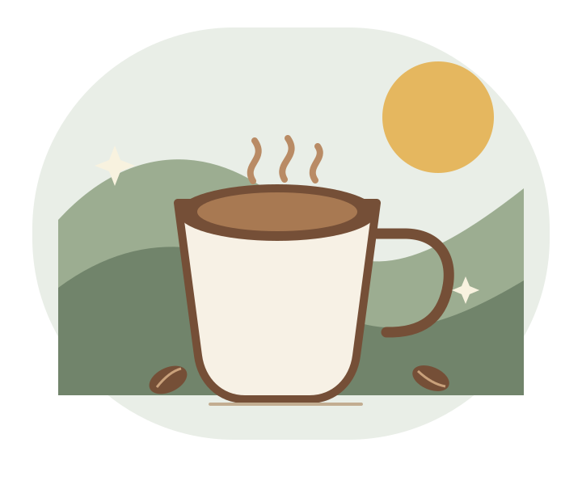

精選咖啡豆
認真挑選每一顆豆子，讓風味自然呈現。
A LITTLE PAUSE IN YOUR DAY
在熟悉的香氣裡，找到自己的生活節奏。

慢一點，GOOD COFFEE, GOOD COMPANY
藍天咖啡相信，一杯好咖啡不必匆忙。從咖啡豆的香氣到空間裡的片刻安靜，我們希望陪你把日子過得從容一點。
看看我們的故事SMALL THINGS, MADE WITH CARE
認真挑選每一顆豆子，讓風味自然呈現。
細心照看烘焙的每個環節，留住剛剛好的香氣。
不趕時間，在舒服的座位上享受一段空白。